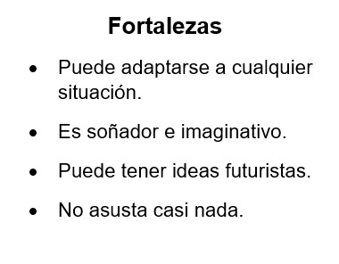
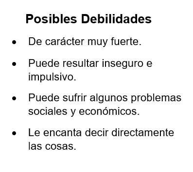

Iq’. Es el viento y la vida, es nawal de la lluvia, es el día del Corazón del Cielo y Corazón de la Tierra.
Es el aire y el soplo sagrado que da fuerza y vida. En este día se le pide al viento que se lleve los sufrimientos o las enfermedades de la persona.
Iq’. Significa aire y aliento de vida.
Es uno de los Cargadores del Tiempo.
Es también, la respiración de la persona. Es el soplo sagrado, suave y apacible purificador del cuerpo, de la mente, del espíritu y de las emociones.
 